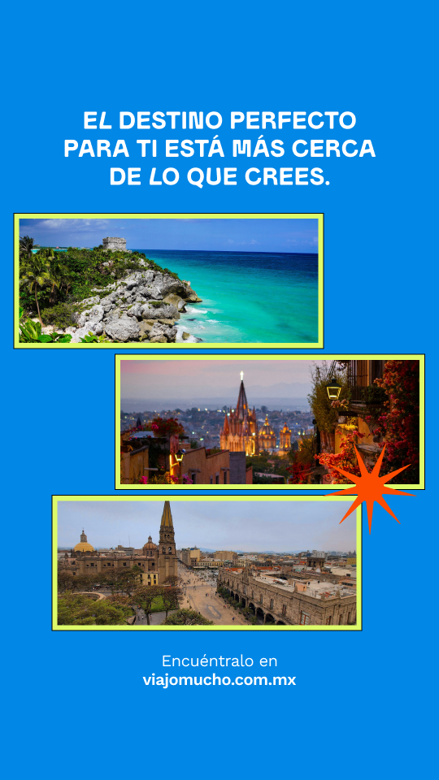

<!doctype html><html lang="es-MX"><meta charset="utf-8"><title>viajo-mucho · Google Fonts</title><link rel="stylesheet" href="../../fonts.css"><style>*{box-sizing:border-box}body{margin:0;background:#e7edf3;font-family:Inter,sans-serif;color:#0d2240}header{width:960px;padding:22px 0;margin:auto;font-size:14px;line-height:1.6}.slide{position:relative;width:960px;margin:0 auto 26px;overflow:hidden;background:white}.editable:focus{outline:2px solid #0066c6}img{display:block}@media print{body{background:white}header{display:none}.slide{margin:0;break-after:page}@page{size:10in 5.625in;margin:0}}</style><header><strong>viajo-mucho · Google Fonts</strong><br>Adaptação autorizada: Lilita One substitui Mauren. Título e apoio editáveis; imagens são recortes do preview do frame 1:3470. Para editar fotografias ou ampliar, obtenha os arquivos de origem. Não altera o Figma.</header><section class="slide" aria-label="Viajo Mucho · adaptación" style="width:720px;height:1280px;background:#0187E6">
<div class="editable" contenteditable="true" spellcheck="false" data-font="Lilita One" style="position:absolute;left:75px;top:165px;width:570px;height:155px;font:400 44px/1.12 'Lilita One';font-synthesis:none;color:white;text-align:center">TU PRÓXIMO VIAJE<br>EMPIEZA CONTIGO.</div>
<div style="position:absolute;top:350px;left:0;width:720px;height:690px;overflow:hidden"></div>
<div class="editable" contenteditable="true" spellcheck="false" style="position:absolute;left:80px;top:1060px;width:560px;height:110px;font:400 27px/1.25 'Work Sans';color:white;text-align:center">Encuéntralo en<br><strong style="font-weight:600">viajomucho.com.mx</strong></div>
</section></html>